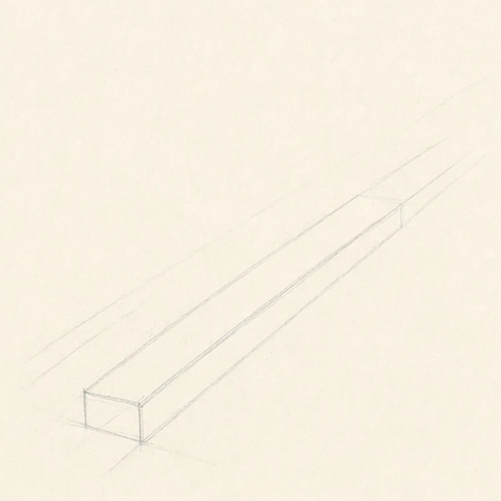
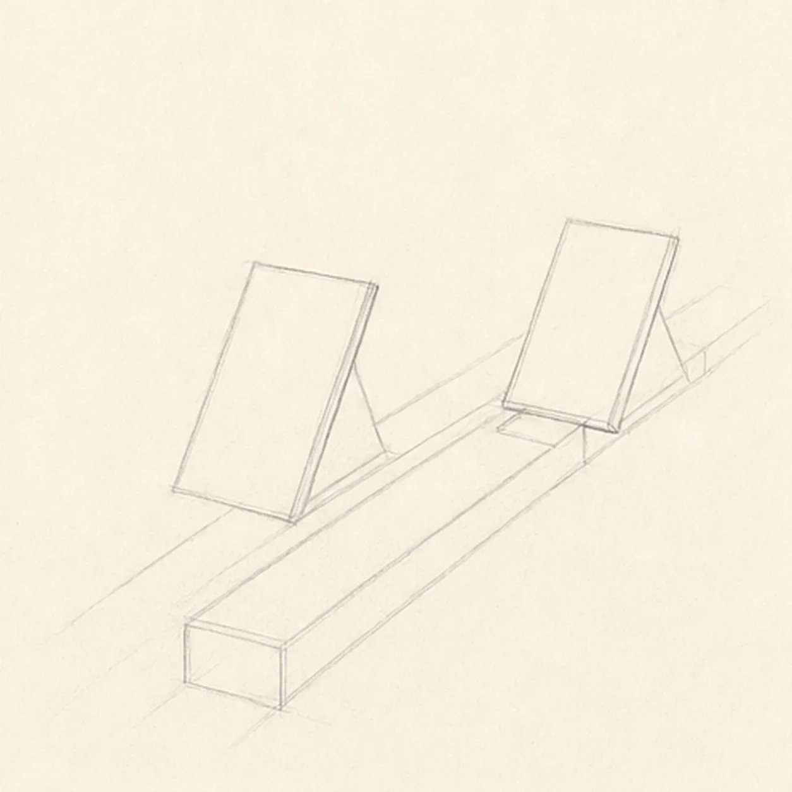
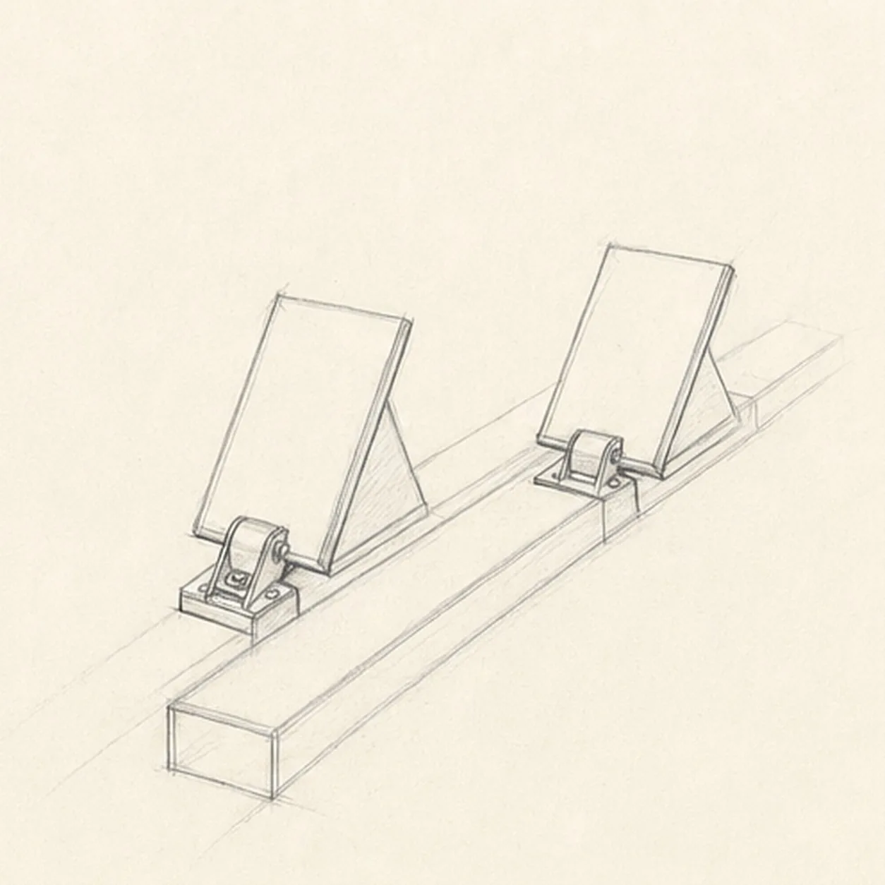
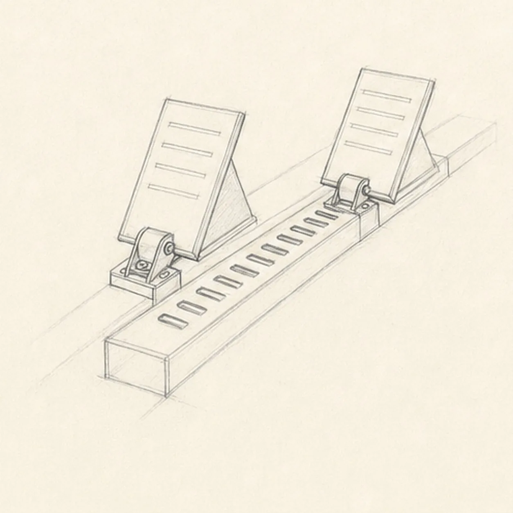
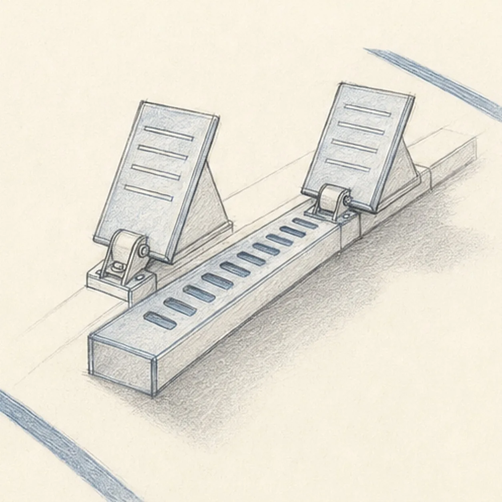

Pencil ready?
Let's draw running track starting blocks
Treat this as one small practice round: build the subject lightly, notice the shapes, then darken only the lines that help the finished sketch.
-
01

Set the rail in perspective
Draw two pale converging guide lines, close the near end with a shallow rectangle, and use them to build one long central rail receding toward the upper right.
Sketch tip: Ghost both long edges before touching down, then compare the narrow paper strip between them. Keep the two future mount areas pale instead of finishing rail detail beneath them.
-
02

Angle the two footplates
Add exactly two tilted rectangular footplates at separate points along the rail, using simple wedge supports to hold both at related angles.
Sketch tip: Compare the open wedges beneath the plates rather than measuring their outlines alone. The farther plate can be smaller, but it should lean toward the same imagined runner.
-
03

Connect the hinge brackets
Attach each established footplate to the rail with one compact hinge bracket, then clarify the outer plate edges and the surviving rail contours around both mounts.
Sketch tip: Rotate the page for the short curved bracket tops. Make every bracket line explain a connection; do not add hardware that floats beside the rail.
-
04

Place the slots and grips
Add the repeated adjustment slots down the exposed center of the rail and draw a few horizontal grip lines inside both footplates.
Sketch tip: Mark the first and last rail slots, then space the rest by eye. Let the spacing compress slightly as it moves away so the perspective stays convincing.
-
05

Ground the blocks on the track
Draw two cropped lane-edge strokes, add one soft cast shadow, and layer light blue-gray pencil over the already-built rail and footplates.
Sketch tip: Pull the lane strokes in the same direction as the rail, then use the side of the graphite for the shadow. Leave paper showing through the blue-gray so the metal still feels sketched.
-
06
Sharpen the ready-set finish
Strengthen the keeper contours and clarify the established rail, two footplates, two brackets, slots, grip lines, lane edges, blue-gray accents, and shadow.
Sketch tip: Trace both plate-to-rail connections with your eyes and stop when every line has a job. A runner, shoe, lane number, stadium, or finish line would turn this focused equipment study into a different lesson.